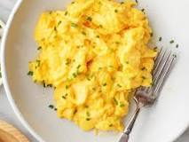

Scrambled egg

Description
- 3 large eggs
- 1 teaspoon milk, plant milk, or water
- Extra-virgin olive oil or butter, for the pan
- Sea salt and fresh black pepper
- Chopped fresh chives, optional, for garnish
Steps
- Crack the eggs into a medium bowl and add the milk or water. Whisk until smooth and combined, with no streaks of egg white remaining.
- Brush a small nonstick skillet with olive oil, or melt a little butter in a small nonstick skillet. Bring to medium heat.
- Pour in the eggs, and let them cook for a few seconds without stirring. Pull a rubber spatula across the bottom of the pan to form large, soft curds of scrambled eggs.
- Continue cooking over medium-low heat, folding and stirring the eggs every few seconds. Scrape the spatula along the bottom and sides of the pan often to form more curds and to prevent any part of the eggs from drying out.
- Remove the pan from the heat when the eggs are mostly set, but a little liquid egg remains. Season to taste with salt and pepper and garnish with chopped fresh chives, if desired.
- Enjoy your meal!